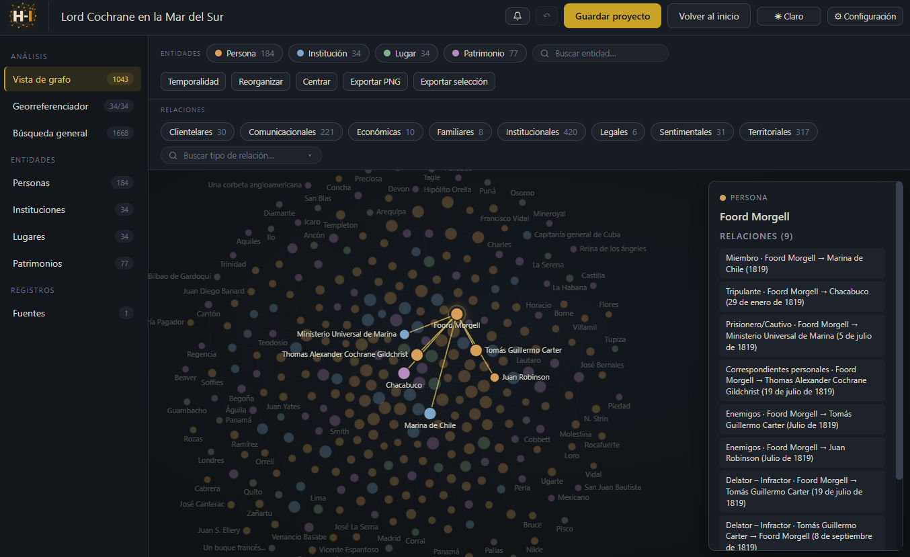

Fichas que ordenan la investigación
Personas, instituciones, lugares, patrimonios y fuentes con campos pensados para la investigación histórica y las dataciones imprecisas.
Software libre para humanistas
H-IMAGO reúne fichas prosopográficas, fuentes, relaciones y mapas en una aplicación de escritorio sencilla. Trabaja con documentación de archivo; deja el código para otra persona.

Selecciona una entidad y consulta sus vínculos sin perder de vista la red completa.
Qué puedes hacer
H-IMAGO no es una base de datos más: está pensado para pasar de la ficha al vínculo, del vínculo a la red y de la red a la interpretación.
Personas, instituciones, lugares, patrimonios y fuentes con campos pensados para la investigación histórica y las dataciones imprecisas.
Tipos de vínculo, fechas, fuentes y notas para reconstruir parentescos, dependencias, conflictos y redes de poder.
Explora el grafo interactivo, filtra por tipo de entidad o relación, ajusta la temporalidad y exporta una imagen para tus publicaciones.
Georreferencia los escenarios de tu investigación y observa cómo se distribuyen en el mapa sin salir de la aplicación.
Encuentra personas, relaciones, bloques de registro y transcripciones desde un único buscador, con fragmentos y filtros.
Organiza la documentación de archivo, transcribe cuadernos y crea bloques de registro adaptados a tus formularios de trabajo.
Capturas
Una interfaz pensada para leer, relacionar y explorar; no para configurar servidores ni escribir comandos.
Cómo funciona
Sin instalar Node.js, sin usar Git y sin configurar un servidor. Solo tienes que descargar, abrir y empezar.
Elige el instalador de Windows o el archivo para Linux. H-IMAGO se abre como cualquier otra aplicación de escritorio.
Empieza un proyecto nuevo o importa uno existente. En modo personal, la base de datos se guarda en tu equipo.
Incorpora personas, instituciones, lugares y fuentes; crea vínculos y observa la red, el mapa y los resultados de búsqueda.
Descargas
Descarga la versión que corresponda a tu sistema. No necesitas clonar el repositorio ni saber usar Git.
Versión 0.0.28 20 de noviembre de 2026
Requisitos: Windows 10/11 de 64 bits o Linux de 64 bits. En modo personal no hace falta instalar una base de datos.
Ver todas las versionesEl instalador de Windows todavía no está firmado digitalmente. Es posible que SmartScreen muestre una advertencia; es esperable en esta versión. Si decides continuar, pulsa Más información → Ejecutar de todas formas.
Cada viernes
Tutoriales, reuniones de trabajo, nuevas utilidades y versiones. Un punto de encuentro para aprender y compartir.
Una versión de consolidación: mejoras de integridad de datos, edición de cuadernos, importación de bloques y rendimiento de búsqueda y grafo.
Leer la releaseVídeos cortos para crear un proyecto, añadir fichas y construir la primera red.
Reuniones de trabajo y casos de uso con personas que investigan con documentación histórica.
Mejoras de la aplicación, experimentos y funciones que irán entrando en las próximas versiones.
Cada viernes añadiremos aquí la novedad de la semana. Si quieres proponer un tema o participar en un workshop, escríbenos en Discussions.
Comunidad
No hace falta saber programar para colaborar. Puedes probar la aplicación, reportar un error, sugerir una mejora, compartir un caso de uso o proponer una colaboración.